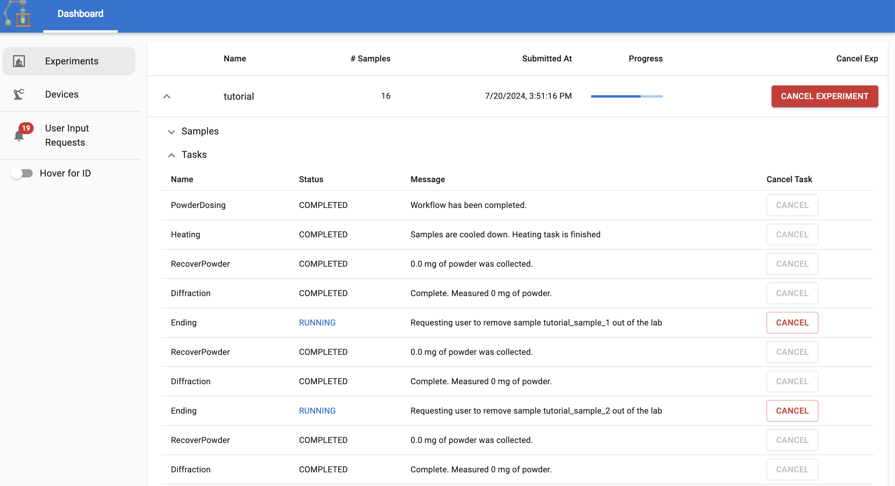

Submitting the synthesis experiments#
The alabos manages each user submission as a separate experiment. Each experiment will define a list of samples you would
like to synthesize, along with the sequence of tasks that need to be performed to synthesize the samples. To ensure the order
of execution, the tasks are defined within a directed acyclic graph (DAG), where the vertices represent the tasks and the edges
represent the dependencies between the tasks.
In typical autonomous lab, there are some tasks that can hold one or multiple samples. For example, one furnace can hold up to 8 samples, while the powder recovery can hold only one sample. So, the task DAG can have multiple incoming/outgoing edges, indicating that one task can be dependent on multiple tasks or multiple tasks can be dependent on one task.
One typical task DAG for A-Lab is shown below, where 16 samples are synthesized in one powder dosing task, followed by two heating task, and finally passing through the powder recovery and diffraction tasks one by one.
Task DAG for A-Lab#
Builder class#
AlabOS offers users a ExperimentBuilder class to define the
experiment.
from alab_management.builders import ExperimentBuilder
# you need a name for the experiment
# you can also provide tags for better organization
# You can also provide arbitrary kwargs to the builder
# it will be stored as metadata (e.g., description)
exp = ExperimentBuilder(name="MyExperiment", tags=["tag1", "tag2"], description="My first experiment")
Add samples#
You can add samples to the experiment using the add_sample method. The method will takes the input information and
returns a sample object.
sample = exp.add_sample(name="my_sample_1", tags=["project"], description="My first sample")
Add tasks#
To add a task, you can directly import the task from your project package. For example, your package is called
alabos_project and you have a task called Heating in the tasks module. You can add the task as follows:
from alabos_project.tasks import Heating
task = Heating(heating_time=120, heating_temperature=1000)
Add task to the sample#
You can add the task to the sample using the add_to method in the BaseTask class.
# you can also do task.add_to([sample1, sample2, ...]) to add multiple samples to the task
task.add_to(sample)
In alabos, the experiment contains a task graph. The order you add the tasks to the samples will define the order of execution.
task1 = Task1()
task2 = Task2()
samples = [sample1, sample2, sample3]
# task1 will be executed before task2
task1.add_to(samples)
task2.add_to(samples)
Example: Build the alab experiment with 16 samples#
If you would like to build the task graph as shown in the above diagram, you can do it as follows. (Assuming your project
package is called alab_example and you have defined the tasks in the tasks module.)
from alab_example.tasks import PowderDosing, Heating, RecoverPowder, Diffraction, Ending
from alab_control.labman import InputFile
from alab_management.builders import ExperimentBuilder
exp = ExperimentBuilder(name="tutorial", tags=["tutorial"])
# Define the samples
samples = [
exp.add_sample(f"tutorial_sample_{i}", tags=["tutorial"], precursors={"Li2CO3": 0.5 * i}) for i in range(1, 17)
]
# Define the steps
powder_dosing = PowderDosing(inputfiles={sample.name: InputFile(powder_dispenses=sample.metadata["precursors"]).to_json() for sample in samples})
powder_dosing.add_to(samples)
heating_1 = Heating(heating_time=120, heating_temperature=500)
heating_1.add_to(samples[:8])
heating_2 = Heating(heating_time=120, heating_temperature=600)
heating_2.add_to(samples[8:])
for sample in samples:
powder_recovery = RecoverPowder()
powder_recovery.add_to(sample)
diffraction = Diffraction()
diffraction.add_to(sample)
ending = Ending()
ending.add_to(sample)
Submit the experiment#
Once you have defined the experiment, you can submit it to the alabos server using the submit method. By default, the
experiment will be submitted to the default server address http://localhost:8895. You can also provide a custom address.
exp.submit(address="http://localhost:8895")
See the status of the experiment#
To monitor the status of the experiment, you can go to the alabos dashboard at http://localhost:8895 (default address)
and see the status.

Check the status via API#
AlabOS also provide API to query individual experiment status. You can call get_experiment_status method to get the status
of the experiment.
from alab_management import get_experiment_status
import time
exp_id = exp.submit(address="http://localhost:8895")
while True:
status = get_experiment_status(exp_id)
## Both "COMPLETED" and "ERROR" are the final status
if status["status"] == "COMPLETED" or status["status"] == "ERROR":
break
time.sleep(5)
The format of the status is as follows:
{
"id": "experiment_id",
"name": "experiment_name",
"progress": 0.5, // indicating the ratio of finished tasks
"status": "running",
"submitted_at": "2021-09-01T12:00:00",
"samples": [
{"id": "sample_id", "name": "sample_name", "position": "sample_position"},
...
],
"tasks": [
{"id": "task_id", "type": "TaskType", "status": "RUNNING", "message": "Complete. Measured 0 mg of powder."},
...
]
}
Advanced submission#
Since alabos can accept any DAG as the task graph, the limitation of the builder is that it can only define an experiment
with a tree-like structure, i.e., it cannot define a task with multiple downstream tasks. However, you can still define
the task graph using some graph package like networkx and submit the experiment to the server.
We will provide a more detailed example in the future.